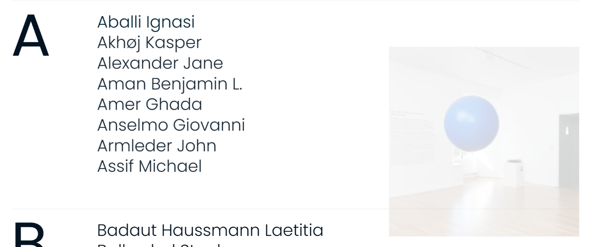
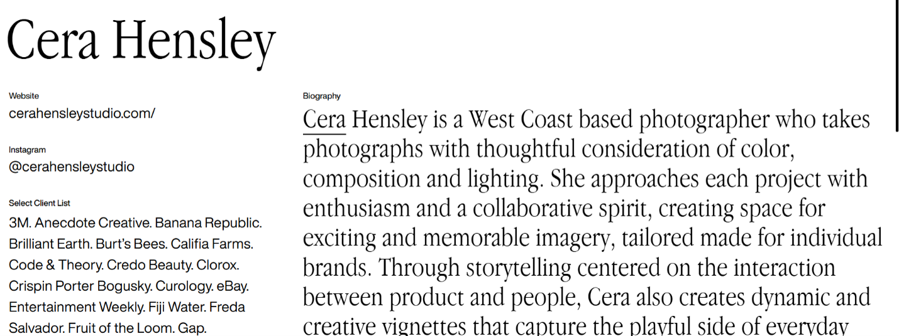
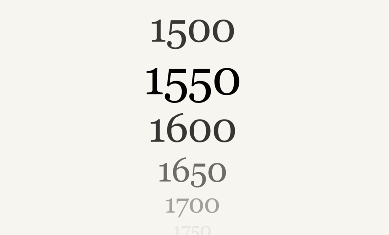
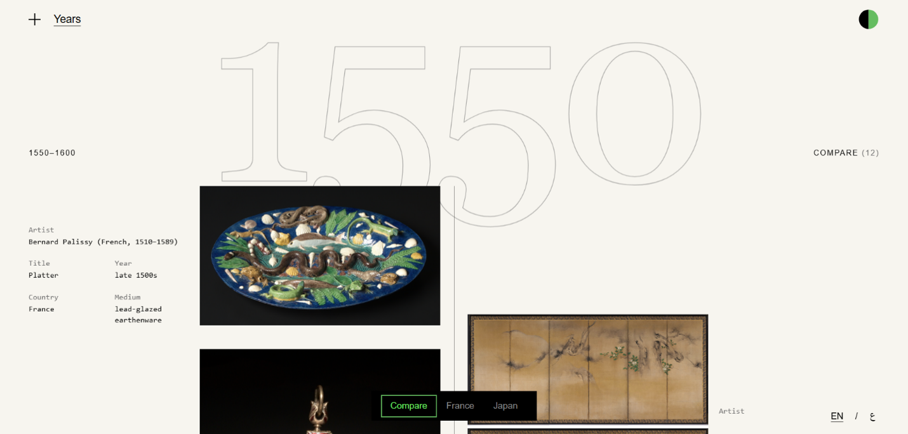
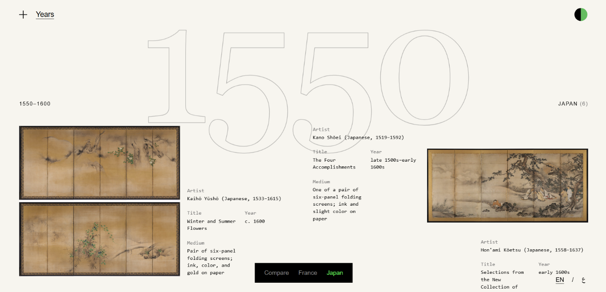

This week, I worked on creating a downloadable PDF file for each artist. At first, I thought I would need to build this feature on my own, however Quire already provides it. For the 15 artist pages (DAAR, Jumana Manna, Samia Halaby, and the rest), I turned on the setting page_pdf_output: true, which tells the site to generate a PDF for each individual page. By default, every per-page PDF started with an extra info sheet showing the title, web address, citation, and licence. I decided to remove that extra page so each PDF starts directly with the artist's content.
I also spent some time looking for design inspiration to see what could be improved in the publication. One layout I liked was from Musée d'art contemporain de Rochechouart, which organizes artists alphabetically. However, for our We Refuse_d publication, an alphabetical list wouldn't be the best fit since we don't have a huge number of artists.

Another design I really liked was from VIV Management, where they display a photographer's work alongside their biography. Marianne and I agreed that showing the artist's biography right next to their artworks on the side is the best way to present their pages.

After that, I started working on the timeline. I wanted to rethink the current layout because I felt some users might find it annoying to navigate, and visually it didn't really fit a museum website. I thought about splitting it into two pages: one listing the years, and another displaying the artworks from whichever year the user selected. Marianne and I decided to build a looping year scroller—when you hover over a year, it shows faded previews of the artworks from both cities during that period, each labelled with its city.

To make the comparison look better, I removed the fixed image frames so the artworks appear in their natural proportions, separated by a divider between the two cities. Once Marianne selected the artworks for the timeline, we ran into a matching issue after grouping the timeline into 5-year periods. For example, in the 1976–1980 period, Baghdad only had 2 artworks while Beirut had much more, which raised the question of whether to show equal numbers or display everything available.
To solve this, I added a filter bar with two options: Compare mode and Single-country mode. In Compare mode, the page displays the two cities' artworks as mirrored pairs, like an open book, matching the count to whichever city has fewer works (so if Baghdad has 2 and Beirut has 4, it shows 2 from each).

In Single-country mode, the other city disappears and the selected city displays all of its artworks for that period.
